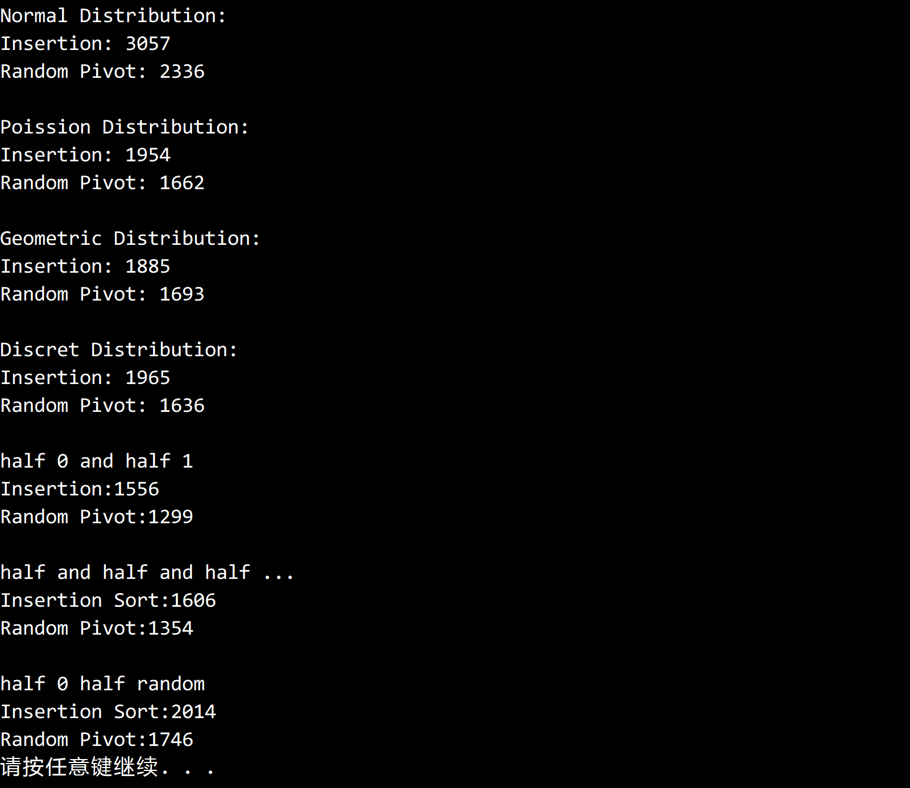

© 2019 《算法（第四版）》C# 题解 | Provided By 沈星繁
搜索解答
目前已完成到 2.5
2.3.30
上次更新：2019-02-13
题目
2.3.30
极端情况。
用初始随机化和非初始随机化的快速排序测试练习 2.1.35 和练习 2.1.36 中描述的大型非随机数组。
在将这些大数组排序时，乱序对快速排序的性能有何影响？
解答
结果如下，在 N=5000000 时，随机选择枢轴会比事先打乱快一点。

代码
using System;
using Quick;
namespace _2._3._30
{
/*
* 2.3.30
*
* 极端情况。
* 用初始随机化和非初始随机化的快速排序测试练习 2.1.35 和练习 2.1.36 中描述的大型非随机数组。
* 在将这些大数组排序时，乱序对快速排序的性能有何影响？
*
*/
class Program
{
static void Main(string[] args)
{
QuickSortInsertion insertionSort = new QuickSortInsertion();
QuickSortRandomPivot randomSort = new QuickSortRandomPivot();
int n = 5000000;
// 高斯分布（正态分布）
double[] arrayInsertion = SortCompare.GetNormalDistributionArray(n);
double[] arraySelection = new double[n];
arrayInsertion.CopyTo(arraySelection, 0);
Console.WriteLine("Normal Distribution:");
Console.WriteLine("Insertion: " + SortCompare.Time(insertionSort, arrayInsertion));
Console.WriteLine("Random Pivot: " + SortCompare.Time(randomSort, arraySelection));
Console.WriteLine();
// 泊松分布
arrayInsertion = SortCompare.GetPossionDistributionArray(n);
arrayInsertion.CopyTo(arraySelection, 0);
Console.WriteLine("Poission Distribution:");
Console.WriteLine("Insertion: " + SortCompare.Time(insertionSort, arrayInsertion));
Console.WriteLine("Random Pivot: " + SortCompare.Time(randomSort, arraySelection));
Console.WriteLine();
// 几何分布
arrayInsertion = SortCompare.GetGeometricDistributionArray(n, 0.3);
arrayInsertion.CopyTo(arraySelection, 0);
Console.WriteLine("Geometric Distribution:");
Console.WriteLine("Insertion: " + SortCompare.Time(insertionSort, arrayInsertion));
Console.WriteLine("Random Pivot: " + SortCompare.Time(randomSort, arraySelection));
Console.WriteLine();
// 离散分布
arrayInsertion = SortCompare.GetDiscretDistributionArray(n, new double[] { 0.1, 0.2, 0.3, 0.1, 0.1, 0.1, 0.1 });
arrayInsertion.CopyTo(arraySelection, 0);
Console.WriteLine("Discret Distribution:");
Console.WriteLine("Insertion: " + SortCompare.Time(insertionSort, arrayInsertion));
Console.WriteLine("Random Pivot: " + SortCompare.Time(randomSort, arraySelection));
Console.WriteLine();
// 一半是 0 一半是 1
int[] arrayNormalInsertion = HalfZeroHalfOne(n);
int[] arrayRandomPivot = new int[n];
arrayNormalInsertion.CopyTo(arrayRandomPivot, 0);
Console.WriteLine("half 0 and half 1");
Console.WriteLine("Insertion:" + SortCompare.Time(insertionSort, arrayNormalInsertion));
Console.WriteLine("Random Pivot:" + SortCompare.Time(randomSort, arrayRandomPivot));
Console.WriteLine();
// 一半是 0， 1/4 是 1， 1/8 是 2……
arrayNormalInsertion = HalfAndHalf(n);
arrayNormalInsertion.CopyTo(arrayRandomPivot, 0);
Console.WriteLine("half and half and half ...");
Console.WriteLine("Insertion Sort:" + SortCompare.Time(insertionSort, arrayNormalInsertion));
Console.WriteLine("Random Pivot:" + SortCompare.Time(randomSort, arrayRandomPivot));
Console.WriteLine();
// 一半是 0，一半是随机 int 值
arrayNormalInsertion = HalfZeroHalfRandom(n);
arrayNormalInsertion.CopyTo(arrayRandomPivot, 0);
Console.WriteLine("half 0 half random");
Console.WriteLine("Insertion Sort:" + SortCompare.Time(insertionSort, arrayNormalInsertion));
Console.WriteLine("Random Pivot:" + SortCompare.Time(randomSort, arrayRandomPivot));
}
/// <summary>
/// 获取一半是 0 一半是 1 的随机 <see cref="int"/> 数组。
/// </summary>
/// <param name="n">数组大小。</param>
/// <returns>一半是 0 一半是 1 的 <see cref="int"/>数组。</returns>
static int[] HalfZeroHalfOne(int n)
{
int[] result = new int[n];
Random random = new Random();
for (int i = 0; i < n; i++)
{
if (random.NextDouble() >= 0.5)
{
result[i] = 0;
}
else
{
result[i] = 1;
}
}
return result;
}
/// <summary>
/// 生成 1/2 为 0， 1/4 为 1， 1/8 为 2 …… 的 <see cref="int"/> 数组。
/// </summary>
/// <param name="n">数组长度。</param>
/// <returns>1/2 为 0， 1/4 为 1， 1/8 为 2 …… 的 <see cref="int"/> 数组。</returns>
static int[] HalfAndHalf(int n)
{
int[] array = new int[n];
HalfIt(0, 0, n / 2, array);
Shuffle(array);
return array;
}
/// <summary>
/// 递归生成 1/2 为 0， 1/4 为 1， 1/8 为 2 …… 的 <see cref="int"/> 数组。
/// </summary>
/// <param name="start">填充起点。</param>
/// <param name="number">起始编号。</param>
/// <param name="length">填充长度</param>
/// <param name="array">用于填充的数组。</param>
/// <returns>一个 <see cref="int"/> 数组。</returns>
static int[] HalfIt(int start, int number, int length, int[] array)
{
if (length == 0)
return array;
for (int i = 0; i < length; i++)
{
array[start + i] = number;
}
return HalfIt(start + length, number + 1, length / 2, array);
}
/// <summary>
/// 生成一半是 0 一半是随机整数的 <see cref="int"/> 数组。
/// </summary>
/// <param name="n">数组大小。</param>
/// <returns>生成一半是 0 一半是随机整数的 <see cref="int"/> 数组。</returns>
static int[] HalfZeroHalfRandom(int n)
{
int[] array = new int[n];
Random random = new Random();
for (int i = 0; i < n / 2; i++)
{
array[i] = 0;
}
for (int i = n / 2; i < n; i++)
{
array[i] = random.Next();
}
Shuffle(array);
return array;
}
/// <summary>
/// 打乱数组。
/// </summary>
/// <param name="a">需要打乱的数组。</param>
static void Shuffle(int[] a)
{
int N = a.Length;
Random random = new Random();
for (int i = 0; i < N; i++)
{
int r = i + random.Next(N - i);// 等于StdRandom.uniform(N-i)
int temp = a[i];
a[i] = a[r];
a[r] = temp;
}
}
}
}